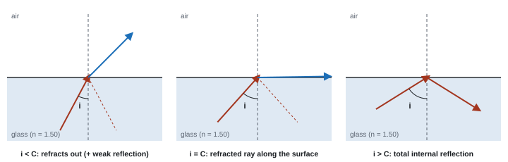
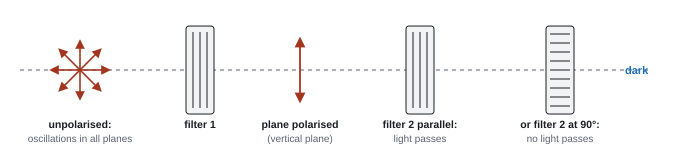
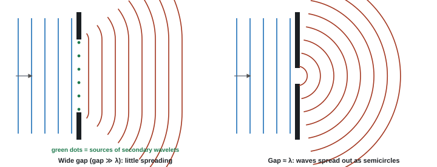
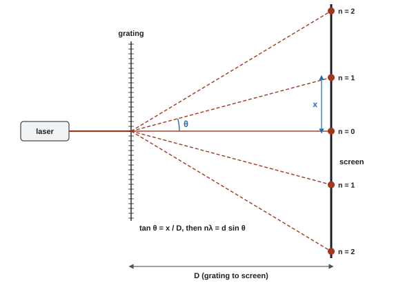

Refraction, Diffraction & Polarisation
Light bends when it crosses into a new material, spreads out when it squeezes through a gap, and can be filtered by the direction it vibrates in. All three behaviours come from picturing light as wavefronts that slow down, spread out and line up. On the way you'll derive Snell's law and the grating equation, and then use a laser and a grating to measure the wavelength of light (Core Practical 6).
Spec45Refraction and refractive index
Know that n₁ sin θ₁ = n₂ sin θ₂ at the boundary between two media, where the refractive index n = c/v.
What refraction is
- Refraction is the change in direction of a wave when it crosses a boundary between two media, caused by a change in its speed.
- Light slows down entering a more optically dense medium (higher n) and bends towards the normal. It speeds up leaving it and bends away from the normal.
- A ray along the normal (angle of incidence 0°) doesn't change direction, but its speed still changes.
- Why it bends: a wavefront meeting the boundary at an angle has one side enter the new medium first. That side slows down first while the other side is still moving fast, so the wavefront swings round.
- Frequency stays the same; wavelength changes with the speed (n₁λ₁ = n₂λ₂).
The equations
Refractive index
Snell's law
- n = absolute refractive index (no unit), c = 3.00 × 10⁸ m s⁻¹ (speed of light in a vacuum), v = speed of light in the material.
- n is always ≥ 1. Air ≈ 1.00, water 1.33, glass about 1.5.
- θ₁, θ₂ are the angles to the normal in medium 1 (where the light comes from) and medium 2.
- Both are on the formulae sheet.
Snell's law three ways
(a) Light in air meets water (n = 1.33) at 40.0° to the normal.
1.00 × sin 40.0° = 1.33 × sin θ₂ → sin θ₂ = 0.6428 ÷ 1.33 = 0.4833 → θ₂ = 28.9°.
(b) Speed of light in water: v = c/n = 3.00 × 10⁸ ÷ 1.33 = 2.26 × 10⁸ m s⁻¹ (3 s.f.).
(c) Light passes from glass (n = 1.50) into water at 30.0° to the normal.
1.50 × sin 30.0° = 1.33 × sin θ₂ → sin θ₂ = 0.750 ÷ 1.33 = 0.5639 → θ₂ = 34.3°. It bends away from the normal because water has the lower n.
A plane wavefront AB meets the boundary at an angle, so end A touches it first. The angle between the wavefront and the boundary equals the angle of incidence \(\theta_1\).
The wavefront is at 90° to the ray and the boundary is at 90° to the normal, so turning both lines through 90° keeps the angle between them the same.
In a time \(t\), end B (still in medium 1) travels to D at speed \(v_1\). Meanwhile the wavelet from A spreads into medium 2 at the slower speed \(v_2\):
\[ BD = v_1 t, \qquad AC = v_2 t \]The new wavefront is the line from D that just touches the wavelet, CD. A tangent meets a radius at 90°, so AC is perpendicular to CD, and AC is the direction of the refracted ray. The angle at D between the boundary and the new wavefront is the angle of refraction \(\theta_2\), for the same reason as in step 1.
Triangles ABD and ACD are both right-angled and share the hypotenuse AD:
\[ \sin\theta_1 = \frac{BD}{AD} = \frac{v_1 t}{AD}, \qquad \sin\theta_2 = \frac{AC}{AD} = \frac{v_2 t}{AD} \]Divide one by the other. Both \(t\) and \(AD\) cancel:
\[ \frac{\sin\theta_1}{\sin\theta_2} = \frac{v_1}{v_2} \]Since \(f\) is the same on both sides, this ratio also equals \(\lambda_1/\lambda_2\).
Now use \(v = c/n\), so \(v_1/v_2 = (c/n_1)/(c/n_2) = n_2/n_1\):
\[ \frac{\sin\theta_1}{\sin\theta_2} = \frac{n_2}{n_1} \quad\Rightarrow\quad \boxed{n_1\sin\theta_1 = n_2\sin\theta_2} \]Light of wavelength 600 nm in air enters a glass block (\(n = 1.50\)) at an angle of incidence of 40°. Calculate (a) the angle of refraction, (b) the speed of light in the glass, (c) the wavelength and frequency of the light in the glass.
Show solution
(a) Snell's law with \(n_1 = 1.00\):
\[ \sin\theta_2 = \frac{n_1\sin\theta_1}{n_2} = \frac{1.00\times\sin 40^\circ}{1.50} = \frac{0.643}{1.50} = 0.429 \quad\Rightarrow\quad \theta_2 = 25.4^\circ \](b) \(v = \dfrac{c}{n} = \dfrac{3.00\times10^{8}}{1.50} = 2.00\times10^{8}\ \text{m s}^{-1}\)
(c) The frequency is unchanged, so the wavelength falls by the same factor as the speed:
\[ f = \frac{c}{\lambda_{\text{air}}} = \frac{3.00\times10^{8}}{600\times10^{-9}} = 5.00\times10^{14}\ \text{Hz}, \qquad \lambda_{\text{glass}} = \frac{v}{f} = \frac{2.00\times10^{8}}{5.00\times10^{14}} = 4.00\times10^{-7}\ \text{m} = 400\ \text{nm} \]- "Use of n₁ sin θ₁ = n₂ sin θ₂ with both values seen" (e.g. 1.33 and 1.52 both visible). n = sin i / sin r is allowed from air.
- Explain refraction: "the wave slows down as it enters the glass"; "part of the wavefront reaches the glass first, so the direction changes". "Density/refractive index of glass greater" is accepted as the reason.
- Define: "change of direction of a ray due to a change in speed/medium". "Bending" alone is not accepted (WPH12 Jan 2021).
Often asked as: on nearly every paper: angles measured from a diagram, n from angles then the speed, identify a gemstone from a table, explain refraction with wavefronts.
Measuring angles from the surface instead of the normal (or reading the wrong protractor scale, 35° for 55°) (WPH12 Jun 2022 examiner report).
Putting speeds into the n₁ sin θ₁ = n₂ sin θ₂ slots (scored 0, WPH12 Oct 2021 examiner report). Convert to n first with n = c/v.
Rounding to 2 s.f. in the middle of a dispersion question: the small difference between colours vanishes. Keep 4 s.f. until the end.
- Dispersion: n is slightly larger for violet than red, so violet bends more and has a smaller critical angle (WPH12 Jun 2021).
- Brewster angle: when the reflected and refracted rays are at 90° to each other, Snell's law gives tan θ_B = n₂/n₁ (3-mark derivation, WPH12 Oct 2019). The reflected light is then plane polarised.
- A wavefront parallel to the boundary enters all at once, so there's no change in direction (WPH12 Oct 2023).
Spec46Critical angle
Calculate the critical angle using sin C = 1/n.
Definition and derivation
- The critical angle C is the angle of incidence, in the more optically dense medium, for which the angle of refraction is 90° (the refracted ray runs along the boundary).
- From Snell's law with θ₁ = C and θ₂ = 90° (sin 90° = 1): n₁ sin C = n₂.
Critical angle
- It only exists going from higher n to lower n. The bigger the difference in n, the smaller C.
critical angles
(a) Glass–air, n = 1.50: sin C = 1 ÷ 1.50 = 0.6667 → C = 41.8°.
(b) Glass (1.50)–water (1.33): sin C = 1.33 ÷ 1.50 = 0.8867 → C = 62.5°. Water around the glass makes TIR harder.
(c) Optical fibre, core 1.48, cladding 1.43: sin C = 1.43 ÷ 1.48 = 0.9662 → C = 75.1°.
At the critical angle, \(\theta_1 = C\) and \(\theta_2 = 90^\circ\). Put these into Snell's law:
\[ n_1 \sin C = n_2 \sin 90^\circ \]\(\sin 90^\circ = 1\), so
\[ \sin C = \frac{n_2}{n_1} \]\(\sin C\) can't be more than 1, so this only has an answer if \(n_1 > n_2\). That's why TIR only happens going into a medium with a lower refractive index.
If the second medium is air, \(n_2 = 1.00\). Calling the first medium's refractive index \(n\):
\[ \boxed{\sin C = \frac{1}{n}} \]- "Use of sin C = 1/n" or "n₁ sin C = n₂ sin 90°" with both values seen.
- If n isn't given, find it first from speeds, n = c/v (e.g. n = 1.53, C = 40.8°, WPH12 Jun 2022).
Often asked as: calculate C for a pair of materials, use C in a geometry problem (prism or semicircular block), MCQs on the conditions.
Using the refractive index of a different boundary from an earlier part of the question (WPH12 Jun 2022 examiner report).
Working out C correctly and then drawing the ray refracting out anyway (WPH12 Oct 2021 examiner report).
Spec47Predicting total internal reflection
Predict whether total internal reflection will happen at a boundary.
The two conditions
Total internal reflection (TIR) happens when both are true:
- The light is going from a medium of higher refractive index to one of lower refractive index (more to less optically dense).
- The angle of incidence is greater than the critical angle.
Then all the light is reflected back into the first medium. Below C, the light mostly refracts out but a weak partial reflection always happens too.

Two ways to predict
- Compare i with C. Work out C for the boundary; if i > C, TIR.
- Try Snell's law. If n₁ sin θ₁ ÷ n₂ comes out bigger than 1, there's no possible refraction angle (sin can't exceed 1), so TIR. Mark schemes accept this.
Optical fibres
- A glass core surrounded by cladding of slightly lower n. Light hits the core–cladding boundary above C, so it is totally internally reflected along the fibre.
- The cladding protects the core from scratches and stops light leaking into neighbouring fibres. Because it has n > 1, it raises the critical angle compared with air.
- Rays at different angles travel different path lengths, so they arrive at different times and a short pulse spreads out (and some rays refract out, so the signal weakens).
will TIR happen?
(a) Light in a 45° glass prism (n = 1.50) hits the long face at 45°. C = 41.8°. 45° > 41.8°, so TIR.
(b) Light in water (n = 1.33, C = 48.8°) meets the water surface at 45°. 45° < 48.8°, so it refracts out: sin θ₂ = 1.33 × sin 45° = 0.9405, θ₂ = 70.1°.
(c) The same water, ray at 55°: 1.33 × sin 55° = 1.09. That is more than 1, so no refracted ray: TIR.
An optical fibre has a core of refractive index 1.50 and cladding of refractive index 1.45. (a) Calculate the critical angle at the core–cladding boundary. (b) Light enters the flat end of the fibre from air. Find the largest angle of incidence at the end for which the light is still totally internally reflected at the core–cladding boundary.
Show solution
(a) The cladding is not air, so use the general form:
\[ \sin C = \frac{n_2}{n_1} = \frac{1.45}{1.50} = 0.967 \quad\Rightarrow\quad C = 75.2^\circ \](b) Let the ray refract at the end face at angle \(r\) to the axis of the fibre. The end face is at 90° to the side of the fibre, so the ray then hits the core–cladding boundary at \(90^\circ - r\) to its normal. For TIR we need
\[ 90^\circ - r \ge 75.2^\circ \quad\Rightarrow\quad r \le 14.8^\circ \]Snell's law at the end face (air to core):
\[ 1.00 \times \sin\alpha = 1.50 \times \sin 14.8^\circ = 1.50 \times 0.256 = 0.384 \quad\Rightarrow\quad \alpha = 22.6^\circ \]Any light entering at more than about 23° to the axis leaks out through the cladding.
- Conditions: "travelling from a more optically dense to a less optically dense medium" and "angle of incidence greater than (or equal to) the critical angle".
- Say "total internal reflection". "Reflection" alone, or "bending" for refraction, doesn't score (WPH12 Oct 2024 examiner report).
- Fibres: "different path lengths, so different times, so the pulse is longer"; "lower cladding index gives a lower critical angle, so more light is totally internally reflected".
Often asked as: compare i with C and draw the ray, prisms (some deliberately not 45°), 6-mark ray-picture reasoning, optical fibres.
Assuming a prism is 45° without checking the angles. Work out the angle of incidence from the geometry (WPH12 Oct 2021 examiner report).
Forgetting the first condition: light going from air into glass can never be totally internally reflected.
Fingerprint scanners: where a skin ridge touches the glass, light is partly transmitted into the skin (dark); at air-filled valleys it is totally internally reflected (bright) (WPH12 Oct 2023).
Spec48Measuring the refractive index of a solid
Understand how to measure the refractive index of a solid material.
Measuring n with a glass block: method in brief
- Put a rectangular glass (or Perspex) block on paper and draw round it.
- Shine a narrow ray from a ray box into one face at an angle. Mark the ray going in and coming out with small crosses far apart.
- Remove the block. Join the crosses and the entry and exit points to draw the ray inside the block.
- Draw the normal at the entry point with a protractor. Measure the angle of incidence i and angle of refraction r from the normal.
- Repeat for 5–6 angles of incidence (e.g. 20° to 70°).
- Plot sin i (y) against sin r (x). The gradient is n (from air, n = sin i / sin r).
Semicircular block (critical angle): aim the ray at the centre of the flat face through the curved side, so it doesn't bend on entering. Increase the angle until the refracted ray just grazes the flat face. That angle is C, and n = 1/sin C.
Errors and improvements
- A wide ray makes the angles uncertain: use a narrow slit and mark the centre of the ray.
- A protractor reads to ±1°. Larger angles give a smaller percentage uncertainty.
- A graph of many readings is better than one pair: it averages random errors and shows anomalies.
- Liquids: put the liquid in a thin-walled transparent container (the walls make little difference) and do the same.
n from one pair of angles
From air into a block: i = 50.0°, r = 30.5°.
n = sin i / sin r = 0.7660 ÷ 0.5075 = 1.51 (3 s.f.).
If a question gives distances instead of angles (e.g. a ray crossing a block of known width), find tan r = opposite/adjacent first, then r, then use Snell's law.
- "Use of trigonometry to correctly determine either i or r", then Snell's law with those angles (WPH12 Jan 2021). Show the trig: an angle read with a protractor doesn't earn that mark.
- Graph: "gradient of sin i against sin r = n".
Often asked as: not as a method question so far, but through ray diagrams and measured results: measure the angles on a printed diagram, use distances to find angles, semicircular blocks.
Diagrams in questions are often drawn to scale and mark schemes accept a range (e.g. 54°–56°). Measure carefully from the normal; don't assume a "nice" angle.
Spec49Plane polarisation
Understand what plane polarisation means.
Unpolarised and plane polarised
- In unpolarised light (e.g. from the Sun or a lamp) the oscillations are in many planes, all containing the direction of travel.
- In plane polarised light the oscillations are in one plane only, which contains the direction of travel.
- Only transverse waves can be polarised. Sound can't be: its oscillations are already along the direction of travel.
Polarising filters

- A polarising filter transmits only oscillations in one plane. Unpolarised light that passes through comes out plane polarised, at about half the intensity.
- Testing whether light is polarised: look through one filter and rotate it.
- Intensity changes from maximum to minimum every 90° → the light is plane polarised. Maximum when the filter is lined up with the plane of oscillation, minimum (zero) when it is at 90°.
- Intensity doesn't change → the light is unpolarised.
Where polarisation turns up
- Reflection: light reflected from water, glass or a road is partially polarised (mostly horizontally). Polarising sunglasses block that plane and cut the glare.
- Screens (LCDs, phones) emit polarised light. Turn the phone through 90° while wearing polarising sunglasses and the screen goes dark.
- Stress analysis: put a clear plastic model between crossed filters. Stress rotates the plane of polarisation, so light gets through the second filter; the brighter areas (with closely spaced coloured fringes) show the greatest stress.
- Radio and TV aerials must line up with the transmitter's plane of polarisation.
Two accepted versions. Use one consistently; don't mix them:
- "Unpolarised: oscillations in all/many planes. Polarised: oscillations in one plane which includes the direction of wave travel."
- Or: "Unpolarised: oscillations in all directions. Polarised: oscillations in one direction, perpendicular to the direction of wave travel."
- "Direction of energy transfer/propagation" is accepted for direction of travel. The last mark depends on the first ones.
- Rotation: "maximum to minimum every 90°"; "brightness" or "amount of light" accepted for intensity.
Often asked as: define plane polarised (2–3 marks) on many papers, test for polarisation, reflected light, sunglasses and phone screens, stress analysis, three filters.
Reciting the definition when the question is about a context. Describe what the filter does in that situation (WPH12 Jun 2024 examiner report).
Answering a one-filter question with the two-filter answer (WPH12 Jun 2019 examiner report).
"In one plane" without saying the plane includes the direction of travel.
- Three filters: filters 1 and 2 aligned, filter 3 at 90° to filter 2: no light. Rotate filter 2 to an in-between angle and some light now passes filter 3, so the intensity increases (WPH12 Oct 2025).
- Intensity against angle sketch for a rotating filter in polarised light: one maximum at 0°, zero at 90°, a smooth curve between (a cos² shape; the equation isn't needed) (WPH12 Jun 2021).
Spec50Diffraction and Huygens' construction
Know what diffraction is, and use Huygens' construction to explain what happens when a wave meets a slit or an obstacle.
Diffraction
- Diffraction is the spreading out of waves when they pass through a gap or around an obstacle.
- The wavelength, frequency and speed don't change. The energy is spread over a wider area, so the amplitude falls.
- The effect is greatest when the gap is about the same size as the wavelength. A gap much wider than λ gives little spreading.
- Sound (λ ≈ 1 m) diffracts noticeably round doorways; visible light (λ ≈ 5 × 10⁻⁷ m) needs a very narrow slit to show it.
- Diffraction is a wave property. Seeing it is evidence that something behaves as a wave (53).
Huygens' construction
- Treat every point on a wavefront as a source of secondary wavelets that spread out at the wave speed.
- A short time later, the new wavefront is the line that touches all the wavelets (their envelope).
- In the middle of a wide gap the wavelets add up to a straight wavefront. At the edges there are no neighbouring wavelets beyond the gap, so the wavefront curves round: that is the spreading.
- If the gap is about λ wide, it acts almost like a single source, so the waves spread out as semicircles.

Single-slit pattern for light
Monochromatic light through one narrow slit gives a wide, bright central maximum with much dimmer, narrower maxima either side. Narrow the slit, or use longer λ, and the pattern spreads further.
- "Waves spread out as they pass through a gap or around an obstacle" ("slit" accepted).
- Huygens: "each point on a wavefront acts as a source of secondary wavelets"; "the wavelets superpose/interfere to form the new wavefront".
- Patterns: "diffraction and interference take place"; maxima = constructive, minima = destructive.
- Resolution: "higher frequency, shorter wavelength, so less diffraction, so more detail" (see 56).
Often asked as: define diffraction, describe Huygens' construction, sketch a single-slit intensity graph, explain bright and dark patches, why short wavelengths give better resolution.
Saying the wavelength changes after the gap. It doesn't.
Saying diffraction "needs" a gap equal to λ. It happens with any gap; it is just most noticeable when the gap ≈ λ.
- Single-slit sketch: central maximum halfway between the edges, twice as wide as the side maxima and much taller (WPH12 Jan 2020).
- Two gaps, 6 marks: waves from each gap diffract and overlap; at the centre there's no path difference so constructive; elsewhere a whole number of λ of path difference gives constructive and an odd number of half wavelengths gives destructive, so with mixed wavelengths different colours peak in different places (WPH12 Jan 2024).
Spec51Diffraction grating, nλ = d sin θ
Use nλ = d sin θ for a diffraction grating.
What a grating does
- A diffraction grating is a plate with a very large number of equally spaced, parallel slits.
- Light diffracts through every slit and the waves interfere. Because there are so many slits, the maxima are very sharp and bright, at precise angles, so angles can be measured accurately.
Where the equation comes from
Take two neighbouring slits a distance d apart. At angle θ, the wave from one has to travel an extra d sin θ. Bright maxima appear where this path difference is a whole number of wavelengths, so the waves from all the slits arrive in phase:
Diffraction grating
- n = order of the maximum (0, 1, 2, …; the straight-through spot is n = 0); λ = wavelength (m); d = slit spacing (m); θ = angle from the straight-through (zero-order) direction. It is on the formulae sheet.
- d = 1 ÷ (number of lines per metre). 300 lines per mm = 3.00 × 10⁵ lines per metre, so d = 3.33 × 10⁻⁶ m.
- Highest order: sin θ can't exceed 1, so n ≤ d/λ. Round down to a whole number.
- White light: a white central maximum, then a spectrum in each order with violet nearest the centre (shortest λ, smallest θ) and red furthest out. Higher orders can overlap.
angles and the number of maxima
A grating has 300 lines per mm and is lit by a 633 nm laser.
d = 1 ÷ (300 × 10³) = 3.33 × 10⁻⁶ m.
First order: sin θ = λ/d = 6.33 × 10⁻⁷ ÷ 3.33 × 10⁻⁶ = 0.190 → θ = 10.9°.
Second order: sin θ = 2 × 0.190 = 0.380 → θ = 22.3°.
Highest order: n ≤ d/λ = 3.33 × 10⁻⁶ ÷ 6.33 × 10⁻⁷ = 5.27, so n = 5. Maxima seen: 5 each side + the central one = 11.
Look at two neighbouring slits, a distance \(d\) apart, sending light at angle \(\theta\) to the normal. The screen is so far away (compared with \(d\)) that the two rays are effectively parallel.
Drop a perpendicular from the top slit onto the lower ray. That makes a right-angled triangle with hypotenuse \(d\), and the extra distance travelled by the lower ray is the side opposite the angle \(\theta\):
\[ \text{path difference} = d\sin\theta \]The angle at the top slit is \(\theta\) because the perpendicular is turned 90° from the ray, just as the grating is turned 90° from the normal.
The waves arrive in phase, and interfere constructively, when the path difference is a whole number of wavelengths:
\[ \boxed{n\lambda = d\sin\theta}, \qquad n = 0, 1, 2, \dots \]Every neighbouring pair has the same path difference, so in these directions light from all the slits is in phase. Move slightly away from that angle and the small phase differences add up across hundreds of slits until there is always a slit whose light cancels another's. That's why grating maxima are bright and very sharp.
White light (wavelengths 400 nm to 700 nm) shines on a grating with 500 lines per mm. Show that the second-order and third-order spectra overlap, and explain why the third-order spectrum is incomplete.
Show solution
Slit spacing: \(d = \dfrac{1}{5.00\times10^{5}} = 2.00\times10^{-6}\ \text{m}\).
The red end of the second order:
\[ \sin\theta = \frac{2\times700\times10^{-9}}{2.00\times10^{-6}} = 0.700 \quad\Rightarrow\quad \theta = 44.4^\circ \]The violet end of the third order:
\[ \sin\theta = \frac{3\times400\times10^{-9}}{2.00\times10^{-6}} = 0.600 \quad\Rightarrow\quad \theta = 36.9^\circ \]Third-order violet appears at a smaller angle than second-order red, so the two spectra overlap.
For third-order red, \(\sin\theta = 3\times700\times10^{-9}/2.00\times10^{-6} = 1.05\). That's more than 1, so no angle exists: the red end of the third-order spectrum is missing.
- "Use of nλ = d sin θ". Single- or double-slit equations get no credit (WPH12 Jun 2019).
- Why maxima form: "path difference between waves from adjacent slits is a whole number of wavelengths, so they are in phase, so constructive interference, giving maxima".
- "Allow a reverse calculation" to check a label (e.g. 300 lines per mm), but the conclusion must compare with the label.
Often asked as: very common: find d or lines per mm, find λ, highest order, what happens if d or λ changes, why bright dots appear, white-light spectra.
Using the angle between the two first orders as θ. Halve it (WPH12 Oct 2024 examiner report).
Mixing up n and d, or slipping a power of ten when converting lines per mm.
Taking the reciprocal of a slit spacing that was already given (WPH12 Jun 2024 examiner report).
Using tan θ = x/D and then putting tan θ into the grating equation. Find θ, then take sin θ.
Generic "constructive and destructive interference" without explaining why the maxima are at those angles.
Spec52Core practical 6: wavelength of light with a diffraction grating
Find the wavelength of light from a laser (or another source) using a diffraction grating.

Core practical 6: method in brief
- Clamp the grating so it is perpendicular to the laser beam and parallel to the screen (a wall), about 1–2 m away.
- Measure D, the perpendicular distance from grating to screen, with a metre rule or tape.
- Mark the central spot and the spots of each order on paper on the screen.
- Measure the distance between the two first-order spots (left to right) and halve it to get x. This halves the percentage uncertainty compared with measuring one side.
- θ = tan⁻¹(x/D). Then λ = d sin θ / n, with d from the grating's lines per mm.
- Repeat for the second and third orders. Plot sin θ against n: a straight line through the origin with gradient λ/d.
Safety
- Use a low-power (class 2) laser. Never look into the beam or its reflections.
- Point it away from people (and their eye level), stand behind it, and remove shiny surfaces from the beam's path.
Errors and improvements
- Make D large and measure across both sides of the pattern: the same ±1 mm is then a smaller percentage.
- Measure to the centre of each spot.
- Don't use the small-angle approximation. θ is often 10°–30°, where sin θ and tan θ are noticeably different.
- The distance from the laser to the grating doesn't matter.
λ from a screen measurement
Grating 500 lines per mm, so d = 1 ÷ (5.00 × 10⁵) = 2.00 × 10⁻⁶ m. D = 1.200 m. The two first-order spots are 79.0 cm apart.
x = 0.790 ÷ 2 = 0.395 m. tan θ = 0.395 ÷ 1.200 = 0.329 → θ = 18.2°.
λ = d sin θ / n = 2.00 × 10⁻⁶ × sin 18.2° ÷ 1 = 6.25 × 10⁻⁷ m (625 nm) (3 s.f.).
Using x/D instead of sin θ would give 658 nm: about 5 % too high.
In Core Practical 6, a student uses a grating with 300 lines per mm and a screen 1.20 m away. The two second-order spots are 0.985 m apart. (a) Calculate the wavelength of the laser light. (b) How many bright spots appear on a wide enough screen?
Show solution
(a) Distance from the centre to one second-order spot: \(x_2 = 0.985/2 = 0.4925\ \text{m}\).
\[ \tan\theta = \frac{x_2}{D} = \frac{0.4925}{1.20} = 0.410 \quad\Rightarrow\quad \theta = 22.3^\circ, \quad \sin\theta = 0.380 \] \[ d = \frac{1}{3.00\times10^{5}} = 3.33\times10^{-6}\ \text{m} \] \[ \lambda = \frac{d\sin\theta}{n} = \frac{3.33\times10^{-6}\times0.380}{2} = 6.33\times10^{-7}\ \text{m} = 633\ \text{nm} \](b) \(d/\lambda = 3.33\times10^{-6}/6.33\times10^{-7} = 5.27\), so the highest order is 5. Counting \(n = 0\) and orders 1 to 5 on each side: \(2\times5 + 1 = 11\) spots.
- Measurements: "distance from the central maximum to another maximum (or between two maxima of the same order)" and "the perpendicular distance from grating to screen" (WPH12 Oct 2024).
- Safety: "do not look directly into the laser / point it away from people / stand behind it / avoid reflective surfaces".
- Reduce uncertainty: "measure from the first order on one side to the first order on the other", "increase the grating-to-screen distance", so the percentage uncertainty falls (WPH12 Jan 2021).
Often asked as: what to measure, laser safety, reducing uncertainty, set-up MCQs (grating parallel to the screen; laser-to-grating distance not needed), then the 51 calculations.
Quick checks
Light passes from water into air at an angle to the normal. Which of these stays the same?
The frequency is set by the source; the boundary can't change the number of waves arriving each second. The speed increases, so the wavelength increases too (\(v = f\lambda\)), and the ray bends away from the normal.
A ray inside glass (\(n = 1.50\)) hits a boundary with water (\(n = 1.33\)) at an angle of incidence of 55°. What happens?
The critical angle here is \(\sin^{-1}(1.33/1.50) = 62.5^\circ\), not 41.8° (that's for glass to air). 55° is less than 62.5°, so the ray refracts out, at 67.5° to the normal, with a little partial reflection.
Unpolarised light passes through two polarising filters. The second filter is rotated slowly through 360°. How many times does the transmitted intensity fall to zero?
The light is blocked whenever the two transmission axes are at 90° to each other, which happens at 90° and again at 270° of rotation.
Water waves of wavelength 1.0 cm pass through a gap 5.0 cm wide. Which change would make them spread out the most?
Diffraction is greatest when the gap width is about the same as the wavelength. Amplitude has nothing to do with how much a wave diffracts.
Light of wavelength 600 nm falls on a grating with 400 lines per mm. What is the highest order of maximum that can be seen?
\(d = 1/(4.00\times10^{5}) = 2.50\times10^{-6}\ \text{m}\), so \(d/\lambda = 4.17\). Round down: the highest order is 4. (9 is the total number of spots, orders −4 to +4.)
Which observation shows that light is a transverse wave?
Refraction, diffraction and reflection happen to longitudinal waves such as sound too. Only transverse waves can be polarised.